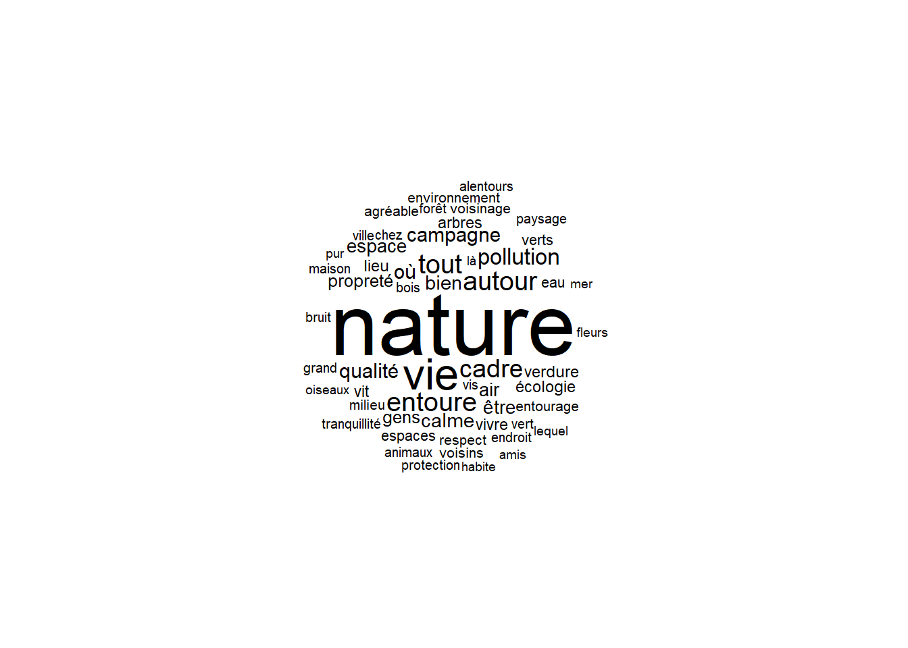
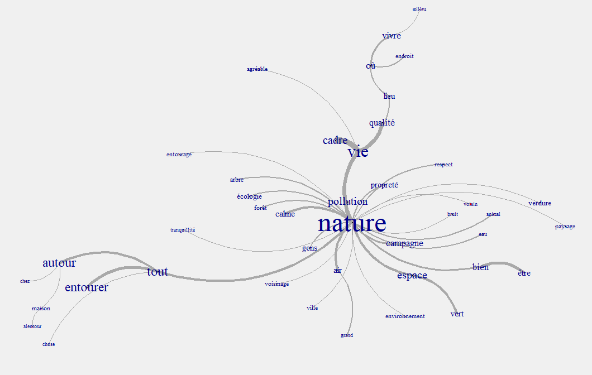
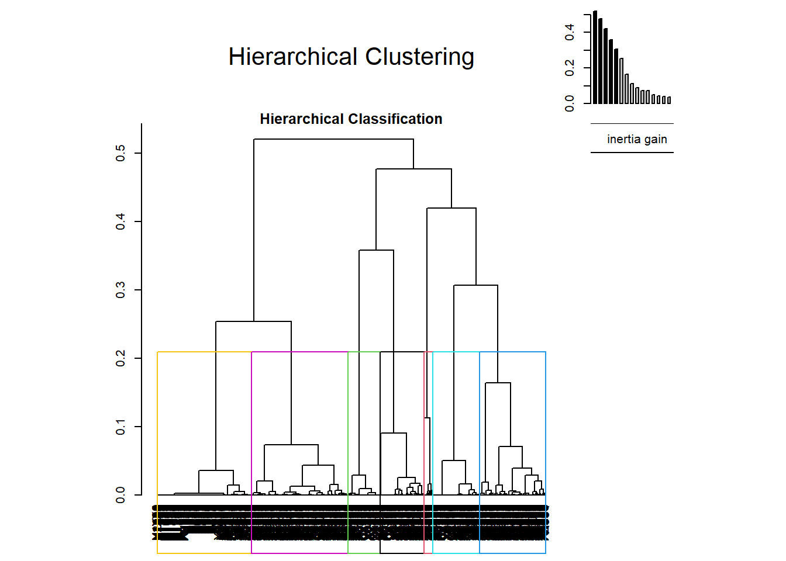
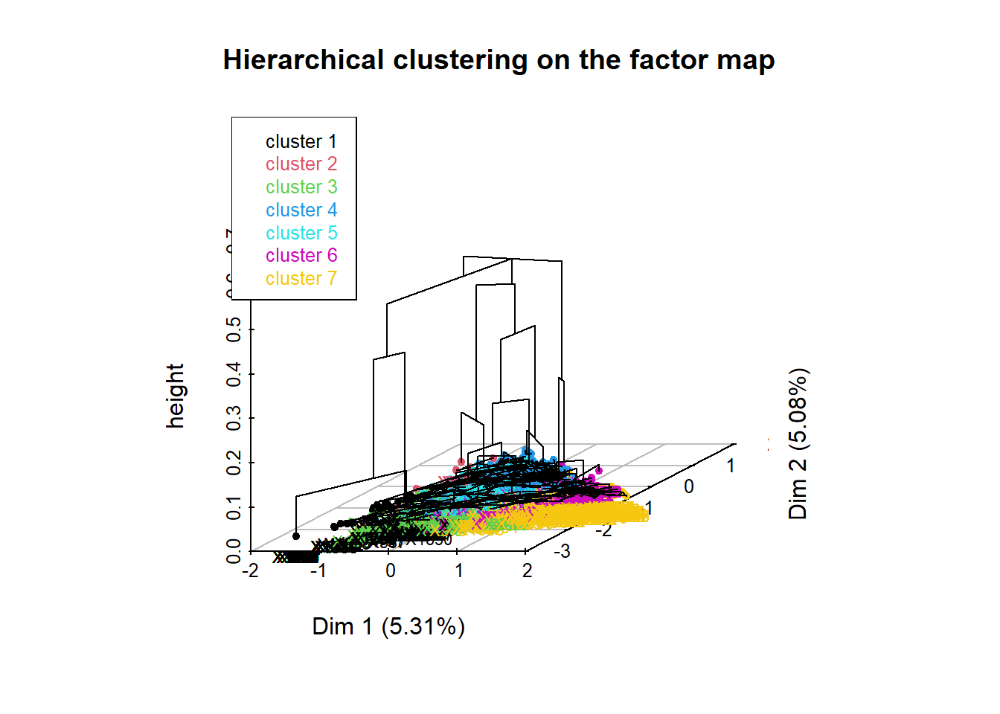
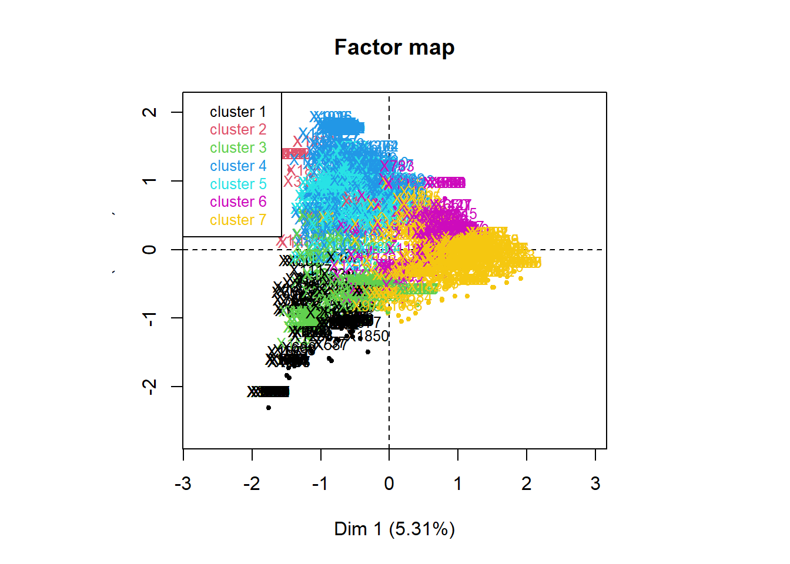
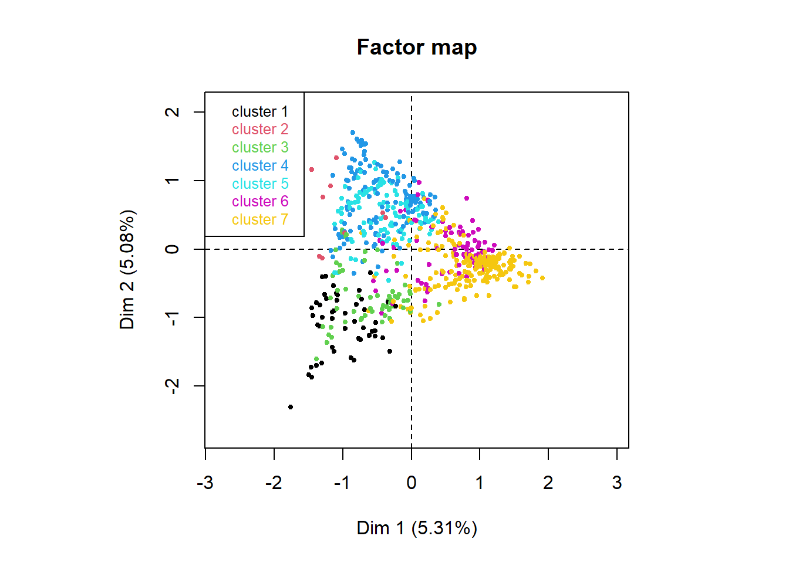
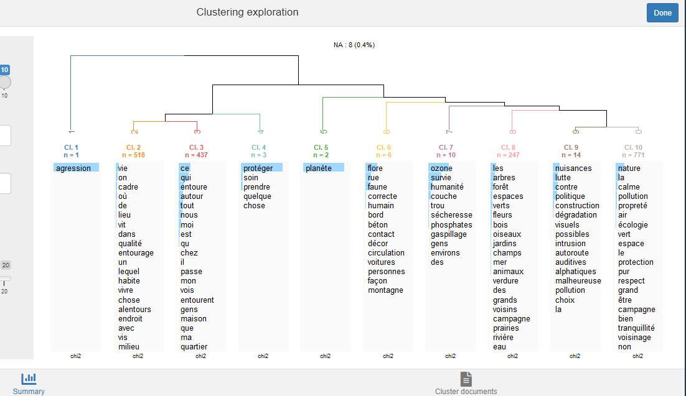

library(R.temis)Pas à pas pour analyser une question ouverte avec R.temis
Appel du package R.temis
Données
Le corpus utilisé dans cet exemple contient un extrait des réponses à une question ouverte issue de l’enquête Populations, Espaces de Vie, Environnements (Ined, 1992). L’intitulé de la question est celui-ci :Si je vous dis Environnement, qu’est ce que cela évoque pour vous ?.
Pour chaque enquêté, on dispose de caractéristiques socio-démographiques (https://data.ined.fr/index.php/catalog/41).
Les données sont stockées dans un tableau, dit individus x variables, contenant 2017 lignes (le nombre de répondants) et 16 colonnes. Ces colonnes correspondent aux variables suivantes : identifiant du questionnaire, caractéristiques des répondants (ou métadonnées) et en 16ème colonne la variable correspondant à la question ouverte ( variable textuelle). Les textes des réponses constituent le corpus.
corpus <- import_corpus("data/PEE_K1_extract.csv", format="csv",textcolumn=16,language="fr")Création du tableau lexical
La fonction build_dtm crée le tableau lexical (Document Term Matrix dans R).
dtm <-build_dtm(corpus, remove_stopwords=F,min_length=2)
dtm<<DocumentTermMatrix (documents: 2017, terms: 1157)>>
Non-/sparse entries: 11298/2322371
Sparsity : 100%
Maximal term length: 17
Weighting : term frequency (tf)Les lignes du tableau lexical correspondent ici aux 2017 réponses extraites de l’enquête “Populations, Espaces de Vie, Environnements (PEE), Ined 1992) et les colonnes aux 1157 mots distincts du corpus.
Affichage
# des metadonnées
View(meta(corpus))
# des réponses à la QO
View(sapply(corpus,as.character))
# d'un extrait du Tableau lexical
inspect(dtm)
#as.matrix(dtm[1:10, c("de", "abus")])Occurrences
Explorer le lexique
La fonction dictionary crée le dictionnaire associé au lexique. On peut explorer via RStudio : affichage des mots par ordre alphabétique ou par fréquence.
On affiche la liste des mots les plus fréquents avec la fonction frequent_terms.
dic<-dictionary(dtm,remove_stopwords = F)
frequent_terms(dtm, n=20) Global occ. Global %
la 1112 9.0983472
nature 888 7.2655866
de 823 6.7337588
les 417 3.4118802
le 406 3.3218786
vie 382 3.1255114
ce 362 2.9618720
qui 352 2.8800524
autour 193 1.5791196
est 192 1.5709377
tout 190 1.5545737
entoure 183 1.4973000
cadre 173 1.4154803
pollution 146 1.1945672
nous 135 1.1045655
on 129 1.0554737
où 119 0.9736541
campagne 111 0.9081983
qualité 108 0.8836524
bien 105 0.8591065Le mot nature est évoqué 888 fois dans cet extrait des réponses à la question ouverte (PEE) et représente plus de 7% des occurrences.
Afficher le nuage de mots !
Ici affiche les mots de plus de 20 occurrences et on choisit de ne pas afficher les mots-outils (fonction word_cloud),
cloud<-word_cloud(dtm, color="black", n=100, min.freq=20,remove_stopwords=T)
Les occurrences de quelques mots doivent être précisées dans la légende de ce graphique pour aider sa compréhension.
Concordances
Les concordances permettent, pour chaque mot, de rassembler l’ensemble des textes (ici les réponses à la question ouverte) dans lesquels il apparaît (fonction concordances).
Ici par exemple on cherche comprendre pourquoi le mot enquêté apparait dans les réponses.
concordances(corpus,dtm,"enquêté")X158
tout ce qui ce passe à l'extérieur du logement de l'enquêté
X1487
ce qui entoure l'enquêté, voir, sentir#concordances(corpus,dtm,"alentour")
#concordances(corpus,dtm,"sur")
#concordances(corpus,dtm,"que")On doit afficher les concordances à chaque étape d’interprétation des résultats.
Cooccurrences
Terme le plus associé (positivement ou négativement) à un terme
On utilise la fonction cooc_terms qui affiche les termes coocurrents à un mots choisi (ici logement) dans l’ensemble du corpus.
cooc_terms(dtm,"logement", n=10) % Term/Cooc. % Cooc./Term Global % Cooc. Global t value Prob.
logement 10.6194690 100.0000000 0.09818360 12 12 Inf 0.0000
du 4.4247788 11.9047619 0.34364261 5 42 3.944244 0.0000
mon 3.5398230 10.0000000 0.32727868 4 40 3.296309 0.0005
alentours 2.6548673 9.6774194 0.25364098 3 31 2.762872 0.0029
personnes 1.7699115 16.6666667 0.09818360 2 12 2.558003 0.0053
enquêté 0.8849558 50.0000000 0.01636393 1 2 2.087832 0.0184
principal 0.8849558 50.0000000 0.01636393 1 2 2.087832 0.0184
vivent 0.8849558 50.0000000 0.01636393 1 2 2.087832 0.0184
--------- NA NA NA NA NA NA NA
la 3.5398230 0.3597122 9.09834724 4 1112 -2.063841 0.0195
nature 0.8849558 0.1126126 7.26558665 1 888 -2.894881 0.0019Parmi les réponses contenant logement, mon représente 3,5% de l’ensemble des occurrences. Plus de 10% des occurrences de mon sont présentes quand logement est aussi donné dans les réponses.
On verra par la suite qu’on peut produire un graphe de mots.
Analyse factorielle sur un tableau lexical entier
L’analyse factorielle sur un tableau lexical met en évidence les mots les plus cooccurrents. La lecture des mots les plus contributifs aux axes et les concordances permettent d’identifier des champs lexicaux. Par la suite, elle peut aider à de justifier (ou non) la lemmatisation de certains mots (partie suivante).
resTLE <-corpus_ca(corpus,dtm, sparsity=0.985)37 documents have been skipped because they do not include any occurrence of the terms retained in the final document-term matrix. Increase the value of the 'sparsity' parameter if you want to include them. These documents are: X75, X114, X130, X197, X284, X377, X402, X554, X561, X585, X725, X776, X844, X861, X909, X911, X917, X940, X1026, X1108, X1141, X1148, X1154, X1396, X1470, X1512, X1522, X1565, X1576, X1608, X1720, X1743, X1789, X1796, X1871, X1877, X1983.Variable(s) X, qnumq have been skipped since they contain more than 100 levels.#explor(resTLE)
res <- explor::prepare_results(resTLE)
explor::CA_var_plot(res, xax = 1, yax = 2, lev_sup = TRUE, var_sup = FALSE,
var_sup_choice = , var_hide = "Row", var_lab_min_contrib = 0, col_var = "Position",
symbol_var = "Type", size_var = "Contrib", size_range = c(23.4375, 312.5),
labels_size = 10, point_size = 25, transitions = TRUE, labels_positions = NULL,
xlim = c(-3, 2.91), ylim = c(-2.42, 3.49))Les aides à l’interprétation classiques (valeurs propres, contributions, coordonnées, …) sont stockées dans resTLE que l’on explore avec grâce à la fonction explor (RShiny).
Mettre les QO en regard avec les métadonnées
On dispose des variables suivantes : sexe, age en classes (aget), situation matrimoniale(matrim), pratique religieuse (pratique), avoir des enfants oui/non(enf), activite, profession regroupée (prof), diplôme (dipl), vote écolo oui/non (vote), type d’habitat, type de localité (local), revenu, region.
Répartitions
Vérifie la répartition des caractéristiques des enquêté pour chaque métadonnée.
library (questionr)
table(meta(corpus)$sexe)
table(meta(corpus)$aget)
table(meta(corpus)$matrim)
table(meta(corpus)$pratique)
table(meta(corpus)$enf)
table(meta(corpus)$activite)
table(meta(corpus)$prof)
table(meta(corpus)$dipl)
table(meta(corpus)$vote)
table(meta(corpus)$habitat)
table(meta(corpus)$localite)
table(meta(corpus)$revenu)
table(meta(corpus)$region)Nombre de mots par sous-corpus
Ici on compte les mots de chaque sous-corpus crée à partir de la variable Region de l’enquête.
lexical_summary(dtm, corpus,"region", unit = "global")
Per category total: Bretagne Centre Jura_Alpes
Number of terms 2142.000000 686.000000 1702.000000
Number of unique terms 411.000000 162.000000 383.000000
Percent of unique terms 19.187675 23.615160 22.502938
Number of hapax legomena 239.000000 95.000000 244.000000
Percent of hapax legomena 11.157796 13.848397 14.336075
Number of words 2142.000000 686.000000 1702.000000
Per category total: Mediterrannée Nord S_BassinParis
Number of terms 1256.000000 1907.000000 842.000000
Number of unique terms 304.000000 361.000000 237.000000
Percent of unique terms 24.203822 18.930257 28.147268
Number of hapax legomena 181.000000 204.000000 156.000000
Percent of hapax legomena 14.410828 10.697431 18.527316
Number of words 1256.000000 1907.000000 842.000000
Per category total: S_Ouest Seine Corpus total
Number of terms 1445.000000 2242.000000 12222.000000
Number of unique terms 306.000000 472.000000 1157.000000
Percent of unique terms 21.176471 21.052632 9.466536
Number of hapax legomena 182.000000 279.000000 650.000000
Percent of hapax legomena 12.595156 12.444246 5.318279
Number of words 1445.000000 2242.000000 12222.000000Le corpus contient 12222 mots dont 1157 mots distincts, alors que le corpus des enquêtés de la région Seine contient 2242 mots dont 472 mots distints. On pourrait comparer ici le % de mots distincts (indicateur de richesse du vocabulaire) 9,5% vs 21% en région Seine.
Specificités
Mots spécifiques par modalités
# selon le région
specific_terms(dtm,meta(corpus)$aget, n=10)$`20-29ans`
% Term/Level % Level/Term Global % Level Global occ. t value
pollution 2.3171615 21.917808 1.19456717 32 146 3.597375
nature 9.7031137 15.090090 7.26558665 134 888 3.520068
la 11.4409848 14.208633 9.09834724 158 1112 3.079918
écologie 1.0861694 23.437500 0.52364588 15 64 2.622351
habite 0.5068791 31.818182 0.18000327 7 22 2.385060
flore 0.2172339 60.000000 0.04090983 3 5 2.254811
planète 0.2172339 60.000000 0.04090983 3 5 2.254811
futur 0.1448226 100.000000 0.01636393 2 2 2.233463
--------- NA NA NA NA NA NA
vivre 0.0724113 1.694915 0.48273605 1 59 -2.451376
pas 0.0724113 1.587302 0.51546392 1 63 -2.600224
Prob.
pollution 0.0002
nature 0.0002
la 0.0010
écologie 0.0044
habite 0.0085
flore 0.0121
planète 0.0121
futur 0.0128
--------- NA
vivre 0.0071
pas 0.0047
$`30-39ans`
% Term/Level % Level/Term Global % Level Global occ. t value Prob.
espace 1.5224913 44.89796 0.80183276 44 98 4.535542 0.0000
vert 0.5536332 48.48485 0.27000491 16 33 2.949616 0.0016
travail 0.3114187 56.25000 0.13091147 9 16 2.575370 0.0050
aux 0.2422145 63.63636 0.09000164 7 11 2.548321 0.0054
espaces 0.6920415 40.00000 0.40909835 20 50 2.441736 0.0073
beauté 0.2768166 53.33333 0.12272950 8 15 2.249163 0.0123
me 0.1384083 80.00000 0.04090983 4 5 2.236567 0.0127
tissus 0.1038062 100.00000 0.02454590 3 3 2.219964 0.0132
qualité 1.2456747 33.33333 0.88365243 36 108 2.199543 0.0139
------- NA NA NA NA NA NA NA
des 0.3460208 10.75269 0.76092293 10 93 -3.020565 0.0013
$`40-49ans`
% Term/Level % Level/Term Global % Level Global occ. t value
vie 3.8917717 27.48691 3.12551137 105 382 2.476145
odeurs 0.2594514 58.33333 0.09818360 7 12 2.459497
cela 0.1482580 80.00000 0.04090983 4 5 2.335376
produits 0.1111935 100.00000 0.02454590 3 3 2.299162
pureté 0.1482580 66.66667 0.04909180 4 6 1.974445
respirer 0.1482580 66.66667 0.04909180 4 6 1.974445
choix 0.1111935 75.00000 0.03272787 3 4 1.800639
survie 0.1111935 75.00000 0.03272787 3 4 1.800639
qualité 1.1860638 29.62963 0.88365243 32 108 1.745680
-------- NA NA NA NA NA NA
espaces 0.1482580 8.00000 0.40909835 4 50 -2.420948
Prob.
vie 0.0066
odeurs 0.0070
cela 0.0098
produits 0.0107
pureté 0.0242
respirer 0.0242
choix 0.0359
survie 0.0359
qualité 0.0404
-------- NA
espaces 0.0077
$`50-59ans`
% Term/Level % Level/Term Global % Level Global occ. t value
plaisir 0.4329004 41.176471 0.13909344 7 17 2.647314
autour 2.2881880 19.170984 1.57911962 37 193 2.253119
sur 0.3092146 41.666667 0.09818360 5 12 2.190012
campagnard 0.1236858 100.000000 0.01636393 2 2 2.108485
construits 0.1236858 100.000000 0.01636393 2 2 2.108485
essayer 0.1236858 100.000000 0.01636393 2 2 2.108485
physiques 0.1236858 100.000000 0.01636393 2 2 2.108485
politiques 0.1236858 100.000000 0.01636393 2 2 2.108485
---------- NA NA NA NA NA NA
pollution 0.5565863 6.164384 1.19456717 9 146 -2.603730
eau 0.0000000 0.000000 0.38455245 0 47 -3.022971
Prob.
plaisir 0.0041
autour 0.0121
sur 0.0143
campagnard 0.0175
construits 0.0175
essayer 0.0175
physiques 0.0175
politiques 0.0175
---------- NA
pollution 0.0046
eau 0.0013
$`60ans+`
% Term/Level % Level/Term Global % Level Global occ. t value
coin 0.11001100 100.00000 0.03272787 4 4 2.417029
choses 0.30253025 57.89474 0.15545737 11 19 2.333884
jardin 0.19251925 70.00000 0.08181967 7 10 2.324512
sans 0.16501650 75.00000 0.06545574 6 8 2.298140
---------- NA NA NA NA NA NA
protection 0.08250825 10.00000 0.24545901 3 30 -2.327551
cadre 1.01760176 21.38728 1.41548028 37 173 -2.398498
espace 0.49504950 18.36735 0.80183276 18 98 -2.450984
qualité 0.55005501 18.51852 0.88365243 20 108 -2.549664
vie 2.28272827 21.72775 3.12551137 83 382 -3.519802
nature 5.85808581 23.98649 7.26558665 213 888 -3.932301
Prob.
coin 0.0078
choses 0.0098
jardin 0.0100
sans 0.0108
---------- NA
protection 0.0100
cadre 0.0082
espace 0.0071
qualité 0.0054
vie 0.0002
nature 0.0000Les mots pollution et nature sont plus employés par les répondants les plus jeunes (moins de 30ans)…
Réponses spécifiques par modalités
La fonction characteristic_docs affiche les documents représentatifs d’une catégorie donnée de répondants ici.
Remarque : Le calcul de la distance est fondé sur la métrique du Khi2 et mesure l’écart entre le profil d’un document et le profil moyen du document de la catégorie. Ce critère a tendance à favoriser les textes longs car plus ils contiennent de “mots”, plus ils ont de chance de contenir de “mots” communs, et donc de se rapprocher du profil moyen.
#Réponses spécifiques selon la région
characteristic_docs(corpus,dtm,meta(corpus)$region, ndocs=5)Documents characteristic of: Bretagne
X1426: distance 4.44
la nature, le cadre de vie
X1499: distance 4.505
la nature, ce qui est autour de nous
X21: distance 5.345
la nature, cadre de vie
X1243: distance 5.611
qualité de vie, la nature, la pollution
X148: distance 5.682
la nature
Documents characteristic of: Centre
X1262: distance 4.234
la nature, tout ce qui est autour de moi
X1303: distance 4.234
tout ce qui est autour de moi, la nature
X1025: distance 4.446
tout ce qui est autour de moi, les gens, la nature
X1076: distance 5.269
la nature, tout ce qui m'entoure
X1358: distance 5.269
la nature, tout ce qui m'entoure
Documents characteristic of: Jura_Alpes
X978: distance 4.388
le cadre de vie, la nature
X1777: distance 4.667
tout ce qui est autour de nous, la nature
X264: distance 4.934
tout ce qui est autour de moi, la nature
X241: distance 5.002
la nature, qualité de la vie, cadre de vie
X24: distance 5.906
la nature
Documents characteristic of: Mediterrannée
X1787: distance 5.44
la qualité de vie, tout ce qui nous entoure
X299: distance 6.101
cadre de vie, tout ce qui nous entoure
X103: distance 6.237
la nature
X430: distance 6.237
la nature
X742: distance 6.237
la nature
Documents characteristic of: Nord
X988: distance 4.565
c'est le cadre de vie, la qualité de la vie
X464: distance 5.121
cadre de vie, la nature
X1832: distance 5.121
cadre de vie, la nature
X65: distance 5.423
la nature
X98: distance 5.423
la nature
Documents characteristic of: S_BassinParis
X171: distance 4.469
le cadre de vie, la pollution, la nature
X491: distance 5.596
ce qui est autour de moi, la nature
X100: distance 6.188
la nature
X221: distance 6.188
la nature
X372: distance 6.188
la nature
Documents characteristic of: S_Ouest
X516: distance 4.349
la nature, le cadre de vie
X193: distance 4.667
la nature, ce qui est autour de nous
X1766: distance 5.055
tout ce qui nous entoure, la nature, la pollution
X236: distance 5.199
la nature, cadre de vie
X1229: distance 5.225
l'endroit où on vit, tout ce qui est autour de nous, la nature, la pollution
Documents characteristic of: Seine
X461: distance 4.415
le cadre de vie, la nature
X763: distance 4.415
le cadre de vie, la nature
X118: distance 6.047
la nature
X174: distance 6.047
la nature
X412: distance 6.047
la natureAnalyse factorielle sur tableau de contingence
La fonction corpus_ca permet d’effectuer une AFC qui met en relation les “mots” et un ensemble de variables qualitatives (les métadonnées).
On choisit les variables (ici : sexe, aget, matrim, pratique, enf, activite, prof, dipl, vote, habitat, localite, revenu) pour créer le tableau de contingence croisant les mots du corpus et les modalités des métadonnées sur lequel on calcule l’AFC.
Choix des metadonnées
resTLA<-corpus_ca(corpus,dtm, variables =c("sexe","aget", "matrim","pratique","enf","activite","prof","dipl","vote", "habitat" ,"localite","revenu"),sparsity=0.98)71 documents have been skipped because they do not include any occurrence of the terms retained in the final document-term matrix. Increase the value of the 'sparsity' parameter if you want to include them. These documents are: X22, X29, X32, X75, X114, X128, X130, X131, X140, X142, X197, X284, X360, X377, X402, X496, X514, X532, X554, X561, X563, X583, X585, X609, X619, X632, X685, X725, X766, X768, X776, X777, X787, X798, X844, X861, X909, X911, X917, X940, X971, X1010, X1026, X1065, X1086, X1108, X1116, X1141, X1148, X1154, X1186, X1239, X1280, X1370, X1377, X1396, X1470, X1512, X1522, X1565, X1576, X1608, X1657, X1720, X1743, X1779, X1789, X1796, X1871, X1877, X1983.Variable(s) X, qnumq have been skipped since they contain more than 100 levels.#explor(resTLA)
res <- explor::prepare_results(resTLA)
explor::CA_var_plot(res, xax = 1, yax = 2, lev_sup = FALSE, var_sup = FALSE,
var_sup_choice = , var_hide = "None", var_lab_min_contrib = 2, col_var = "Position",
symbol_var = "Type", size_var = "Contrib", size_range = c(26.25, 350), labels_size = 10,
point_size = 28, transitions = TRUE, labels_positions = NULL, xlim = c(-0.393,
0.447), ylim = c(-0.413, 0.426))On affiche les réponses les plus contributives aux axes 1 à 3 (fonction extreme_docs).
#Documents les plus illustratifs par axe
extreme_docs(corpus,resTLA,axis=1,ndocs=3)Most extreme documents on the positive side of axis 1:
Most extreme documents on the negative side of axis 1:
X53
écologie
X417
écologie
X755
écologieextreme_docs(corpus,resTLA,axis=2,ndocs=3)Most extreme documents on the positive side of axis 2:
Most extreme documents on the negative side of axis 2:
X155
espaces verts, bois, rivières
X635
espaces verts
X1479
espaces vertsextreme_docs(corpus,resTLA,axis=3,ndocs=3)Most extreme documents on the positive side of axis 3:
X259
destruction des biens, poubelles, égouts
X696
des champs, des bois
X1968
paysages environnents, fréquentation des personnes
Most extreme documents on the negative side of axis 3:Lemmatiser
La lemmatisation (Lebart, Salem) consite à regrouper les mots qui ont une signification proche. Cette opération permet de réduire la liste de mots distincts et donc la taille du lexique.
Nous allons voir dans cette partie que cette opération peut se faire de différentes façons et nécessite de faire des choix …
De façon personnalisée
On voit ici comment créer son lemmatiseur.
Suppression de mots
On crée une liste de mots que l’on a choisi de supprimer du tableau lexical et du dictionnaire.
Ici, comme à tout moment de l’analyse, il est important d’afficher les concordances d’un mot pour ensuite faire un choix (le supprimer, le regrouper avec un autre, …).
Pour l’exemple, on supprime les mots sur, que et qu.
#concordances(corpus,dtm,"sur")
# liste des mots à supprimer
asupp <- c("sur","que","qu")
# on enlève les mots de la liste dans le tableau lexical
dtm2 <-dtm[, !colnames(dtm) %in% asupp]On crée le nouveau dictionnaire associé au lexique avec la fonction dictionnarysans les mots-outils et sans les mots que l’on a choisit de ne pas garder pour l’analyse.
dic<-dictionary(dtm,remove_stopwords = T)
# on enlève les mots de la liste dans le dictionnaire
dic2 <- dic[!rownames(dic) %in% asupp,]Pour créér son propre lemmatiseur, on exporte ce dictionnaire (ici dic2.csv) afin de le modifier si besoin, mots après mot (par exemple avec un tableur).
write.csv2(dic2, file="dic2_lem.csv")Correction de la lemmatisation de R
On pourrait utiliser la colonne Terms du dictionnaire pour lemmatiser mais celle-ci ne nous satisfait pas. On décide alors de remplacer les racines de certains mots issues de la lemmatisation automatique et on enregiste ce nouveau dictionnaire qui sera notre lemmatiseur personnalisé.
Ici encore, on s’aide des concordances. Par exemple : concordances(corpus,dtm,c("écologie","écolo","écologique","écologiques","écologiste","écologistes","écolos"))
Pour cette analyse, on utilise un lemmatiseur déjà produit lors d’une analyse précédente (avec Spad). On importe ce lemmatiseur dans R et on utilise la fonction combine_terms pour lemmatiser.
dic_lem1 <- read.csv2("data/Pee_dic_lem_extract.csv",row.names=1)
#setdiff(rownames(dic2), rownames(dic_lem1))
dtmlem1 <-combine_terms(dtm2, dic_lem1)Lexique après lemmatisation
frequent_terms(dtmlem1, n=30) Global occ. Global %
nature 891 12.5087744
vie 382 5.3629089
entoure 195 2.7376106
autour 193 2.7095325
tout 190 2.6674154
cadre 174 2.4427910
pollution 156 2.1900884
où 119 1.6706444
campagne 114 1.6004492
qualité 108 1.5162151
bien 106 1.4881370
calme 103 1.4460199
air 99 1.3898638
espace 98 1.3758248
être 95 1.3337077
propreté 95 1.3337077
gens 77 1.0810052
écologie 73 1.0248491
lieu 64 0.8984978
verdure 62 0.8704198
vivre 59 0.8283027
arbre 58 0.8142637
vit 53 0.7440685
espaces 50 0.7019514
paysage 49 0.6879124
respect 49 0.6879124
eau 47 0.6598343
agréable 46 0.6457953
verts 46 0.6457953
voisinage 45 0.6317563Utilisation de lexique3
Pour selectionner les mots à analyser
Ici on reprend le tableau lexical et le dictionnaire initiaux (dtm et dic) càd sans suppression de mots au choix ni de lemmatisation personnalisée.
On utilise le lemmatiseur crée à partir de lexique 3 (https://chrplr.github.io/openlexicon/datasets-info/Lexique382/README-Lexique.html) qui nous permet dans un premier temps de repérer la catégorie grammaticale de chaque mot du corpus. On peut ensuite ne garder que les mots des catégories qui nous intéressent pour l’analyse (ici les adverbes ADV, les verbes VER, les adjectifs ADJ, les noms NOM, et les pronoms personnels et possessifs PRO:per,PRO:pos). On gardera pour l’analyse également les mots qui n’ont pas été identifiés grâce à Lexique3 ( mis dans la liste nr).
library(dplyr)Warning: le package 'dplyr' a été compilé avec la version R 4.1.3
Attachement du package : 'dplyr'Les objets suivants sont masqués depuis 'package:stats':
filter, lagLes objets suivants sont masqués depuis 'package:base':
intersect, setdiff, setequal, unionlexique3 <- read.csv("data/Lexique383_simplifie.csv", fileEncoding="UTF-8")
lexique3 <- arrange(lexique3, desc(freqlivres))
lexique3 <- lexique3[!duplicated(lexique3$ortho),]
voc_actif <- lexique3[lexique3$cgram %in% c("ADV", "VER", "ADJ", "NOM", "PRO:per","PRO:pos"),]
dic_total <- merge(dic, voc_actif, by.x="row.names", by.y="ortho", all.x=TRUE)
dic_total <- mutate(dic_total, Term=coalesce(lemme, Term))
rownames(dic_total) <- dic_total$Row.names
# Lister les mots non reconnus par Lexique 3
nr <- filter(dic_total, is.na(lemme))Lemmatisation automatique avec lexique3
Cette opération permet à la fois de ne retenir que certaines catégories de mots mais aussi à les remplacer par leur forme racine.
dtmlem2 <- combine_terms(dtm, dic_total)Lexique après lemmatisation avec Lexique3
frequent_terms(dtmlem2, n=30) Global occ. Global %
nature 888 12.4491799
vie 382 5.3553904
tout 216 3.0281789
entourer 195 2.7337726
autour 193 2.7057339
cadre 173 2.4253470
espace 148 2.0748633
pollution 147 2.0608440
où 119 1.6683023
vivre 116 1.6262442
campagne 112 1.5701668
qualité 108 1.5140894
bien 106 1.4860508
calme 103 1.4439927
air 99 1.3879153
être 97 1.3598766
lieu 83 1.1636058
vert 82 1.1495864
propreté 81 1.1355671
gens 77 1.0794897
écologie 64 0.8972382
verdure 62 0.8691995
arbre 60 0.8411608
paysage 49 0.6869480
eau 47 0.6589093
maison 47 0.6589093
agréable 46 0.6448899
forêt 43 0.6028319
respect 43 0.6028319
voisinage 43 0.6028319Graphe de mots
arbre <- terms_graph(dtmlem2, min_occ = 30, interactive=F)
Nouvelle analyse factorielle avec métadonnées
Suite à la lemmatisation avec lexique3
On choisit les mêmes varaibles que plus haut
resTLAlem2<-corpus_ca(corpus,dtmlem2, variables =c("sexe","aget", "matrim","pratique","enf","activite","prof","dipl","vote", "habitat" ,"localite","revenu"),sparsity=0.98)148 documents have been skipped because they do not include any occurrence of the terms retained in the final document-term matrix. Increase the value of the 'sparsity' parameter if you want to include them. These documents are: X20, X25, X75, X76, X85, X109, X111, X112, X114, X128, X130, X131, X175, X179, X181, X184, X195, X197, X242, X247, X248, X262, X284, X293, X338, X377, X402, X445, X492, X501, X552, X554, X555, X561, X570, X598, X600, X604, X609, X619, X632, X640, X649, X676, X685, X696, X725, X728, X748, X761, X776, X785, X803, X804, X819, X844, X861, X878, X898, X899, X909, X917, X940, X971, X972, X977, X1001, X1007, X1010, X1026, X1065, X1074, X1094, X1108, X1116, X1128, X1141, X1148, X1154, X1186, X1190, X1206, X1257, X1289, X1294, X1301, X1338, X1345, X1365, X1370, X1374, X1380, X1387, X1393, X1396, X1403, X1404, X1437, X1461, X1470, X1496, X1504, X1506, X1512, X1514, X1515, X1522, X1527, X1536, X1539, X1565, X1576, X1578, X1579, X1606, X1608, X1637, X1652, X1654, X1656, X1657, X1669, X1697, X1704, X1705, X1707, X1710, X1720, X1743, X1746, X1770, X1782, X1788, X1789, X1796, X1804, X1819, X1825, X1836, X1871, X1877, X1906, X1933, X1937, X1941, X1978, X1983, X1990.Variable(s) X, qnumq have been skipped since they contain more than 100 levels.#explor(resTLAlem2)
res <- explor::prepare_results(resTLAlem2)
explor::CA_var_plot(res, xax = 1, yax = 2, lev_sup = FALSE, var_sup = FALSE,
var_sup_choice = , var_hide = "None", var_lab_min_contrib = 0, col_var = "Position",
symbol_var = "Type", size_var = "Contrib", size_range = c(22.5, 300), labels_size = 10,
point_size = 24, transitions = TRUE, labels_positions = NULL, xlim = c(-0.544,
0.517), ylim = c(-0.482, 0.579))Et pour aller plus loin
Correction de la lemmatisation de Lexique3
La lemmatisation automatique produite avec Lexique3 affiche les racines des mots pour certains (ex. bretagn ou tranquil). On remanie ce lemmatiseur (dic_total) en créant un autre dictionnaire (dicor) avec une colonne contenant les mots qui n’ont pas été lemmatisés automatiquement. Puis on lemmatisera le tableau lexical avec les “mots” (Term) de cette nouvelle colonne.
dic_total_c <- dic_total
dic_total_c$Term[dic_total_c$Term == "bretagn"] <- "bretagne"
dic_total_c$Term[dic_total_c$Term == "tranquil"] <- "tranquilité"
dtmlem22 <- combine_terms(dtm, dic_total_c)Analyser des sous-corpus
On créer des sous corpus à l’aide des métadonnées ou de mots au choix.
Classifications du tableau lexical
Va regrouper les réponses contenant des mots cooccurrents et permet ainsi de repérer des champs lexicaux.
Avec R.temis
clusTLE <- corpus_ca(corpus, dtmlem2,variables = NULL, ncp = 6, sparsity = 0.98)148 documents have been skipped because they do not include any occurrence of the terms retained in the final document-term matrix. Increase the value of the 'sparsity' parameter if you want to include them. These documents are: X20, X25, X75, X76, X85, X109, X111, X112, X114, X128, X130, X131, X175, X179, X181, X184, X195, X197, X242, X247, X248, X262, X284, X293, X338, X377, X402, X445, X492, X501, X552, X554, X555, X561, X570, X598, X600, X604, X609, X619, X632, X640, X649, X676, X685, X696, X725, X728, X748, X761, X776, X785, X803, X804, X819, X844, X861, X878, X898, X899, X909, X917, X940, X971, X972, X977, X1001, X1007, X1010, X1026, X1065, X1074, X1094, X1108, X1116, X1128, X1141, X1148, X1154, X1186, X1190, X1206, X1257, X1289, X1294, X1301, X1338, X1345, X1365, X1370, X1374, X1380, X1387, X1393, X1396, X1403, X1404, X1437, X1461, X1470, X1496, X1504, X1506, X1512, X1514, X1515, X1522, X1527, X1536, X1539, X1565, X1576, X1578, X1579, X1606, X1608, X1637, X1652, X1654, X1656, X1657, X1669, X1697, X1704, X1705, X1707, X1710, X1720, X1743, X1746, X1770, X1782, X1788, X1789, X1796, X1804, X1819, X1825, X1836, X1871, X1877, X1906, X1933, X1937, X1941, X1978, X1983, X1990.Variable(s) X, qnumq have been skipped since they contain more than 100 levels.#Afficher le dendrogramme
#plot(clusTLE$call$tree)
#clusTLE$desc.varIci on selectionne 7 classes
clus <- corpus_clustering(clusTLE,7)



Description des classes
Pour chaque numéro de classe déterminé dans l’étape précédente, R affiche les mots et textes spécifiques qui vont permettre de déterminer les champs lexicaux de chacune.
On ajoute la variable de classe (clus) aux métadonnées initiales.
corpus_cl <- add_clusters(corpus,clus)
#View(meta(corpus_cl))
#clusTLE$desc.varMots spécifiques
On se sert de cette variable issue de la classification pour calculer les spécificités
specific_terms(dtmlem2,meta(corpus_cl)$clus, n=5)Warning in rollup.simple_triplet_matrix(t(x), 2L, INDEX[as.character(k)], :
NA(s) in 'index'$`1`
% Term/Level % Level/Term Global % Level Global occ. t value Prob.
autour 31.1111111 87.046632 2.8669043 168 193 Inf 0
maison 5.5555556 63.829787 0.6981581 30 47 Inf 0
chez 3.3333333 62.068966 0.4307784 18 29 7.244759 0
tout 8.3333333 20.833333 3.2085561 45 216 5.947763 0
------ NA NA NA NA NA NA NA
vie 0.9259259 1.308901 5.6743910 5 382 -5.839226 0
$`2`
% Term/Level % Level/Term Global % Level Global occ. t value
entourage 42.105263 57.1428571 0.62388592 24 42 Inf
construire 3.508772 66.6666667 0.04456328 2 3 3.526962
naturel 3.508772 11.7647059 0.25252525 2 17 2.372694
constituer 1.754386 50.0000000 0.02970885 1 2 2.123318
---------- NA NA NA NA NA NA
nature 3.508772 0.2252252 13.19073084 2 888 -2.187406
Prob.
entourage 0.0000
construire 0.0002
naturel 0.0088
constituer 0.0169
---------- NA
nature 0.0144
$`3`
% Term/Level % Level/Term Global % Level Global occ. t value Prob.
entourer 21.5528782 82.5641026 2.896613 161 195 Inf 0
tout 14.5917001 50.4629630 3.208556 109 216 Inf 0
-------- NA NA NA NA NA NA NA
cadre 0.1338688 0.5780347 2.569816 1 173 -5.447507 0
vie 1.2048193 2.3560209 5.674391 9 382 -6.466817 0
nature 5.2208835 4.3918919 13.190731 39 888 -7.473485 0
$`4`
% Term/Level % Level/Term Global % Level Global occ. t value Prob.
cadre 11.5920763 91.329480 2.569816 158 173 Inf 0
qualité 6.9699193 87.962963 1.604278 95 108 Inf 0
vie 23.9178283 85.340314 5.674391 326 382 Inf 0
------- NA NA NA NA NA NA NA
autour 0.7336757 5.181347 2.866904 10 193 -5.920745 0
nature 6.0161409 9.234234 13.190731 82 888 -9.408410 0
$`5`
% Term/Level % Level/Term Global % Level Global occ. t value Prob.
bien 10.221286 91.509434 1.574569 97 106 Inf 0
être 8.956797 87.628866 1.440879 85 97 Inf 0
où 6.849315 54.621849 1.767677 65 119 Inf 0
vivre 8.746048 71.551724 1.723113 83 116 Inf 0
------ NA NA NA NA NA NA NA
nature 5.057956 5.405405 13.190731 48 888 -8.760695 0
$`6`
% Term/Level % Level/Term Global % Level Global occ. t value
écologie 3.7199125 79.687500 0.9506833 51 64 Inf
nature 33.9897885 52.477477 13.1907308 466 888 Inf
pollution 7.8045222 72.789116 2.1836007 107 147 Inf
--------- NA NA NA NA NA NA
entourer 0.0000000 0.000000 2.8966132 0 195 -9.164544
vie 0.6564551 2.356021 5.6743910 9 382 -10.725412
Prob.
écologie 0
nature 0
pollution 0
--------- NA
entourer 0
vie 0
$`7`
% Term/Level % Level/Term Global % Level Global occ. t value Prob.
arbre 3.401760 96.66667 0.8912656 58 60 Inf 0
calme 5.043988 83.49515 1.5300059 86 103 Inf 0
campagne 5.043988 76.78571 1.6636958 86 112 Inf 0
espace 5.571848 64.18919 2.1984551 95 148 Inf 0
forêt 2.287390 90.69767 0.6387403 39 43 Inf 0Réponses specifiques
specific_terms(dtmlem2,meta(corpus_cl)$clus, n=5)
characteristic_docs(corpus_cl,dtmlem2,meta(corpus_cl)$clu, ndocs=3)Warning in rollup.simple_triplet_matrix(t(x), 2L, INDEX[as.character(k)], :
NA(s) in 'index'Documents characteristic of: 1
X264: distance 4.79
tout ce qui est autour de moi, la nature
X1262: distance 4.79
la nature, tout ce qui est autour de moi
X1303: distance 4.79
tout ce qui est autour de moi, la nature
Documents characteristic of: 2
X1053: distance 14.11
nature, entourage
X1255: distance 14.11
entourage, nature
X801: distance 23.59
l'entourage, l'espace
Documents characteristic of: 3
X267: distance 4.355
ce qui nous entoure, toute la nature
X568: distance 4.355
tout ce qui nous entoure, la nature
X1076: distance 4.355
la nature, tout ce qui m'entoure
Documents characteristic of: 4
X241: distance 2.946
la nature, qualité de la vie, cadre de vie
X21: distance 3.928
la nature, cadre de vie
X236: distance 3.928
la nature, cadre de vie
Documents characteristic of: 5
X422: distance 7.17
la qualité de vie, le bien être, la nature
X309: distance 7.198
nature, bien être de vivre
X1945: distance 7.198
la nature, le bien être à vivre
Documents characteristic of: 6
X24: distance 5.062
la nature
X35: distance 5.062
nature
X65: distance 5.062
la nature
Documents characteristic of: 7
X334: distance 9.761
nature, la vie en campagne, propreté
X1616: distance 10.46
verdure, nature, espace de vie
X896: distance 10.55
nature, calme, vie au grand air, propretéAvec Rainette (type Alceste)
On pourrait également faire une classification avec le package Rainette. En savoir plus sur https://juba.github.io/rainette/articles/introduction_usage.html
Son utilisation nesessite aussi d’appeler le package quanteda.
Attention risque de conflit entre les packages tm (chargé par R.temis) et quanteda : ne pas lancer library(quanteda).
Ici on utilise le corpus non lemmatisé.
library(rainette)
corpus
# On adapte le TLE pour quanteda
dfm <- quanteda::as.dfm(dtm)
quanteda::docvars(dfm, "doc_id") <- 1:nrow(dfm)
# On exécute rainette
resrai <- rainette(dfm, min_uc_size = 3, k = 10, doc_id = "doc_id", cc_test = 0.3,
tsj = 3)Exploration interactive
rainette_explor(resrai,dfm)
groups <-cutree_rainette(resrai, k = 10)
Description des classes
rainette_stats(groups, dfm, n_terms = 5)On récupère la variable issue de la classification Rainette pour des traitements ultérieurs
meta(corpus, "classe") <- cutree_rainette(resrai, k = 10)
#View(meta(corpus))